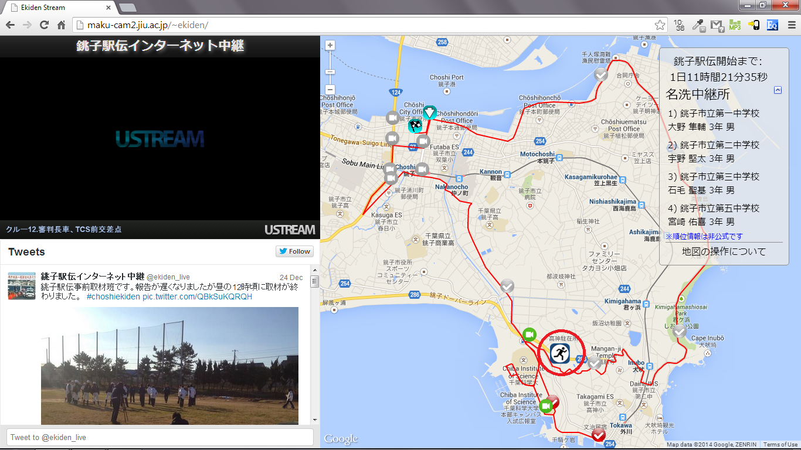
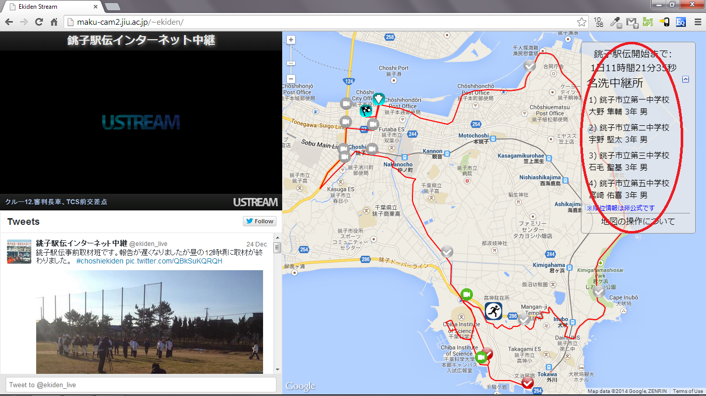
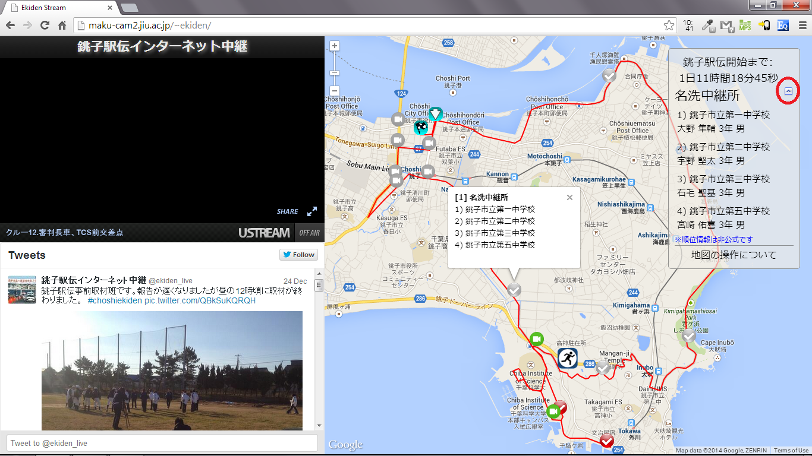
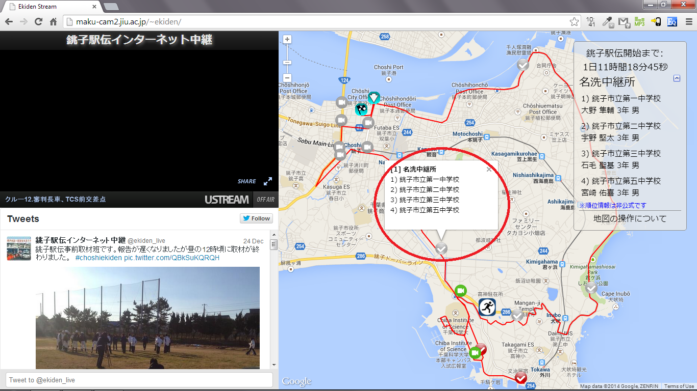
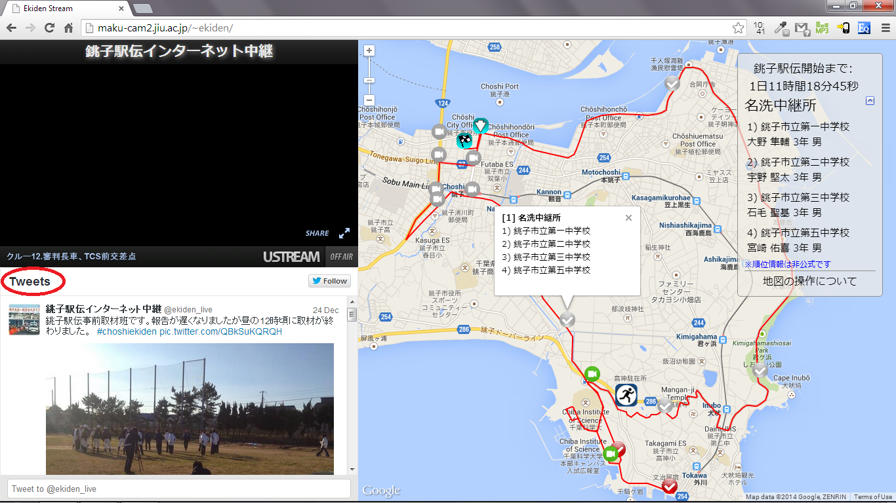

銚子駅伝をご覧いただき、ありがとうございます。銚子駅伝ビュー イングは見た目と違い、簡単な操作で駅伝中継をより楽しむためのシステムです。 以下の説明をお読みいただき、駅伝ビューイングで駅伝中継を楽しんで下さい。
左上の「映像画面」で、駅伝の映像がご覧いただけます。基本的に は「中継車」からの映像を試聴することができます。
「地図画面」上のカラーのアイコンをクリックすると、「映像画面」 の映像は、「撮影ポイント」（カメラ）と「中継所」（レ点）からの映像に切 り替わります。スタートとゴールの青色のアイコンもクリック可能です。
「選手アイコン」は中継車（先頭ランナー）の位置を表示します。 「選手アイコン」の位置を目安にして、自分の見たい「撮影ポイント」のアイ コンを選んで下さい。「選手アイコン」をクリックすれば、中継車の映像に戻 ります。
最新の順位情報とランナーがスタートしてからの経過時間が、ペー ジ右側の「レース情報画面」表示されます。※この絵はイメージです。
「レース情報画面」は、矢印アイコンをクリックすると隠すこと ができます。矢印アイコンを再度クリックすれば、再び「レース情報画面」を 表示できます。
中継が終了した「撮影ポイント」アイコンは灰色に変わります。 灰色のアイコンをクリックしても映像を見ることはできませんが、灰色の「中 継所」アイコンをクリックすれば、中継所での順位情報を確認することができ ます。
駅伝ビューイングはツイッターを活用していますので、アカウント を持っている方は、つぶやいて盛り上がりましょう！